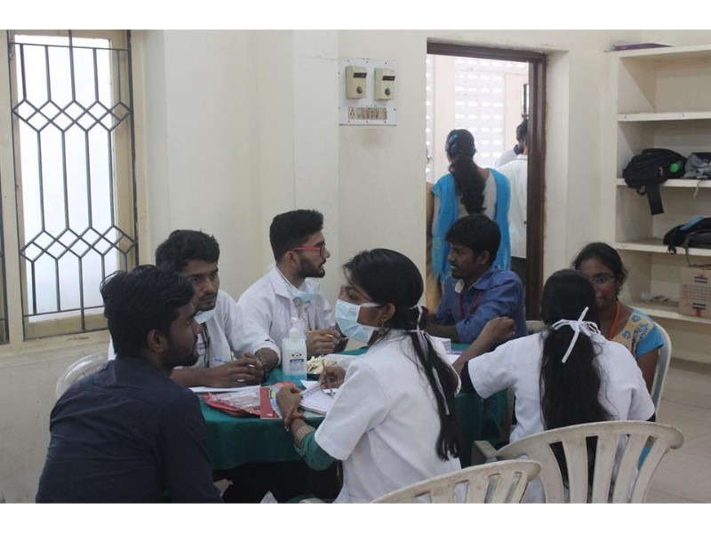
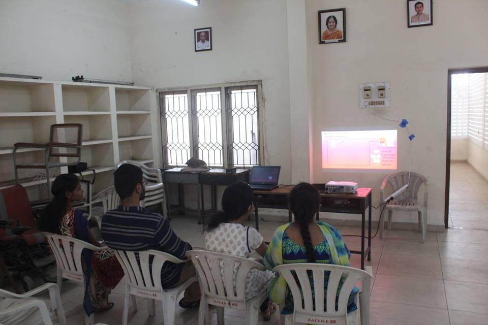
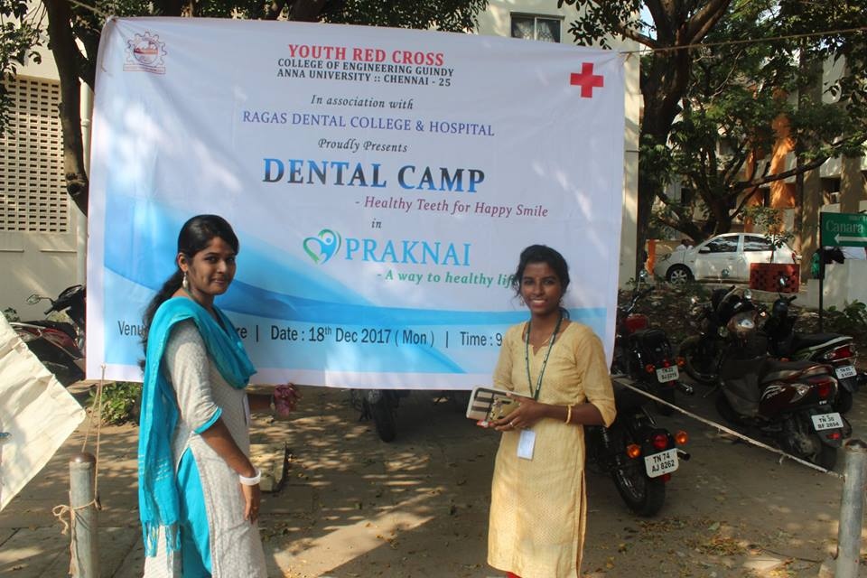

YOUTH RED CROSS
Anna university, Chennai-600025


Praknai'18
(Health Awareness Camp)
(For more details view the site in Desktop)
March 10-16 is observed as Patient Safety awareness week. The Youth Red Cross volunteers of CEG observed the awareness week by conducting a health camp, Praknai. Pulavar R.Manikkam,District Secretary of Indian Red Cross Society, Kancheepuram gave a demonstration on first aid. The students learned enthusiastically the first aid practices to be done in different situations and conditions. Then, Dr.A.Kishorekumar, MD IHBT from the department of Transfusion Medicine, Dr.MGR Medical University gave a session on the merits on blood donation. He also clarified the doubts of the students and encouraged them to donate blood.
Praknai'17
(Health Awareness Camp)
(For more details view the site in Desktop)
Praknai is a health awareness event which was conducted for the first time on 18th December 2017 by the Youth Red Cross, CEG. A dental camp was organised in the Alumni Center, CEG. More than 150 people participated in the dental camp. Various events were also conducted to create awareness on the importance of health. Prizes were also distributed to the winners of the events.


